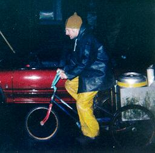
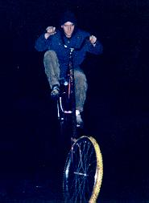
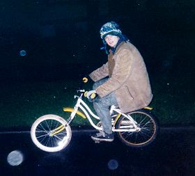
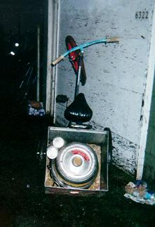
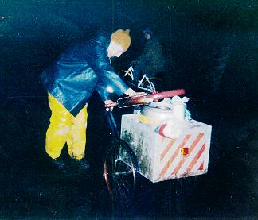
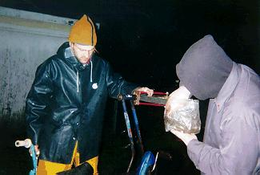
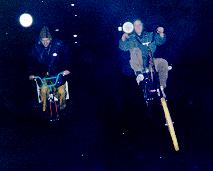

One of the most rewarding aspects of our domination of the neighborhood is that whenever a critical mission must be carried out, C.H.U.N.K. 666 is immediately summoned. If the mission promises a sizable reward, or at least an opportunity to F.U.S., we are sure to take it on.
Such a mission was The Night Delivery. It was Denk's birthday, and, as usual, the local deities had to be convinced that she should be allowed yet another year of being alive. A celebration was necessary, requiring the usual refreshment module.
Unfortunately, the celebration location was across town from the underground beer stockpile. The fluids had to be transported across the Forbidden Zone and past the rabble of beer-craving mutants.
| The cargo vehicle was, of course, Keg Trike, piloted by Hoss, our most loyal and reliable beast of burden. Unfortunately, Hoss had recently been doing quite a bit of cargo hauling, and had been exposed to enough radioactivity to reduce a normal human into a smoldering lump. He wouldn't hear of letting anyone else carry this load, however, and incapacitated Klöven Hööf when we hinted that he might do the job better. What a gentleman! We relented after we found this beautiful radiation suit for him to wear. |  |
|  | Wing guard was supplied by the Grim Streetsweeper on Baby, with his excellent night vision. |
| Finally, Denk herself rode point on the Cactus Flower, a chopper of her own creation, and kept an eye on us to make sure that we didn't tap the keg before we arrived. |  |

Keg Trike is shown here outside of the hangar in its pre-launch position. The weight of the pilot is necessary for the front wheel of the vehicle to touch down.
|  | This attribute became a feature when, not one block after takeoff, the head tube of Keg Trike snapped clear through! Auto-wheelie instantly commenced, followed by rapid deceleration as Hoss found himself sitting behind his steed with the handlebars in his hands. Although natural component failure was the obvious cause (something like this happens almost every ride), the nature of our mission forced us to assume that foul play was involved, and we instantly snapped into defensive positions. Hoss pushed Keg Trike to safety as Denk monitored the perimeter. |
| A rider zipped back to base and somehow found a replacement stem and wheel with an intact tire, but the outlook looked grim until the Streetsweeper pulled out the Stash Bag. In this pouch is kept the collected small hardware of generations of departed bikes. Headset parts were found that fit, at least to Chunk specifications. |  |
|  | The wrench was applied and we were again on our way with no further complications until arrival. Details from that point on are hazy. |
(Return to C.H.U.N.K. Operations)
| Copyright 2003 Megulon Five <megulon5@dclxvi.org>. |
|
This work is licensed under a Creative Commons License. | Last modified 12 September 1997. |